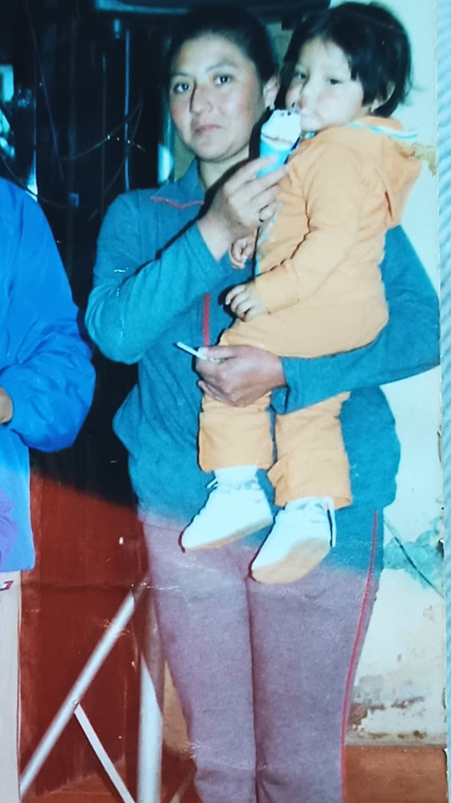

Recuerdos
Una coleccion de momentos que significan mucho.
Una cancion para ti
MAMITA LINDA
A veces no lo digo , pero siempre lo pienso Gracias mamá por todo lo que hiciste en silencio , sin que nadie te lo reconociera Gracias por aguantar mis días difíciles Eres mi raíz Mi refugio, mi ejemplo Si hoy soy una buena persona, ES porque tu sembraste lo mejor en mí Gracias por no rendirte conmigo, por ser mi maestra ,mi enfermera, mi psicóloga ,mi Fan número 1. Este mensaje es poco para lo que te mereces, Pero al menos Hoy quiero que sepas , Estoy orgullosa de que seas mi mamá Y si volviera a nacer... Volvería a elegirte a Ti
Una carta
FELIZ DIA MAMITA LINDA,
Querida mamá nunca te lo digo lo suficiente , pero te admiro más de lo que las palabras pueden expresar, eres la persona más fuerte que conozco, incluso en los días en los que no te sientes así, haz echo sacrificios que jamás podré comprender del todo
Renunciaste a tus sueños para que yo pudiera perseguir los mios, te vi llorar a escondidas pensando que yo no notaba pero siempre supe que tus lágrimas eran por darnos lo mejor a veces soy egoísta , aveces olvidó agradecerte por las cosas más simples,por levantarme cuando me caigo,por seguir creyendo en mi, cuando yo misma dejo de hacerlo, por sostener todo un mundo en tus hombros sin quejarte
Gracias por cada comida preparada con amor ,por los abrazos que sanan, por los regaños que duelen pero me hacen mejor persona,si el amor tuviera nombre llevaria el tuyo te quiero con todo mi corazón ❤️
Con cariño,
Tu hija
